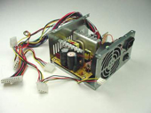
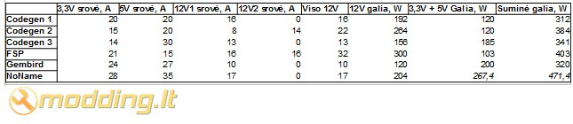

Ar man užteks 350W?
Ar visi 350W maitinimo šaltiniai vienodi? Ar man užteks 350W? Jei į pirmą klausimą galima drąsiai atsakyti ne, tai į antrąjį nėra vieningo atsakymo, nes ar užteks priklauso tiek nuo kompiuterio tiek nuo pačio maitinimo šaltinio. Turbūt yra tekę pastebėti, kad ant maitinimo šaltinio visuomet būna lipdukas su krūvom skaičiukų į kuriuos dažnas nekreipia dėmesio, nes „bile būtų vatų daug“. Ir labai stipriai klystama, nes būtent ten slypi tikrieji maitinimo šaltinio parametrai, o ne kažkokie mistiniai vatai.
Teorija
Po ranka pakliuvo šeši maitinimo šaltiniai su iš pažiūros vienodu galingumu ir pamąsčiau, kad visai neblogai būtų palyginti juos tarpusavyje ir pasidalinti atradimais su liaudimi.
Pradžiai pasižiūrėkime kokie skaičiai mus domina ir ką jie reiškia. Kaip žinome, kompiuterio maitinimo šaltinis konvertuoja elektros tinklo tiekiamą 220V įtampą į įtampas priimtinas kompiuteriui, kurios šiuolaikiniame kompiuteryje yra +3.3V, +5V, +12V, -12V ir +5VSB. Senesniuose kompiuteriuose dar galima išvysti -5V, tačiau dabar tokia įtampa nenaudojama ir nuo to maitinimo šaltinis nėra nė kiek blogesnis.
Kiekviena įtampa naudojama tam tikrose grandyse, kaip pvz.:
- +3.3V, +5V – M/B, HDD, PCI signalų grandinėm, USB ir pan. mažo galingumo grandyse.
- -12V – reikia tik keliose grandyse, COM prievadams.
- +5VSB – naudojama tuomet kai kompiuteris yra išjungtas, pagrinde M/B reikmėms, tačiau kai kurios valdymo panelės irgi naudoja šią liniją maitinimuisi (būtina tam, kad būtų galima su distanciniu pažadinti kompiuterį).
- +12V – svarbiausia šiuolaikinio kompiuterio maitinimo linija, būtent tokia įtampa maitinamas procesorius, vaizdo plokštė, įsukami diskai ir DVD-ROM įrenginiai, dauguma ventiliatorių ir t.t.
Kai kurie naujesni ir galingesni maitinimo šaltiniai turi po kelias +12V linijas ir jos atitinkamai vadinamos 12V1, 12V2 ... 12Vn. Kol kas tarkime, kad jos sumuojasi, o visus tų „multirailų“ privalumus ir trūkumus bei marketingą atidėkime vėlesniems laikams.
Jei įtampos reikalingos kompiuteriui visuomet yra tokios pačios, apibrėžtos ATX standarto ir niekada nesiskiria, tai galingumas reikalingas kiekvienam kompiuteriui yra individualus ir priklauso nuo komponentų „apetito“. Dėl tos priežasties ir yra gaminami skirtingo galingumo maitinimo šaltiniai. Galingumas šiuo atveju yra srovės stiprio toje įtampos linijoje ir įtampos sandauga. Bet juk turime daug skirtingų įtampų? Kaip jas sudėt ir sudaugint? Ogi reikia sudaugint kiekvienos įtampą su toje linijoje naudojamu srovės stipriu ir tuomet visus gautus galingumus sudėti, kad gautume kompiuterio suvartojamą galingumą arba maitinimo šaltinio atiduodamą galingumą, tai kiek painu, bet tarkime kompiuteris A naudoja 20A srovę 5V linijoje ir 10A 12V linijoje, tuomet jo suminė naudojama galia bus 20*5 + 10*12 = 220W. Tačiau turime kompiuterį B, kuris naudoja 8A srovę 5V linijoje ir 15A 12V linijoje. Susumuojam 8*5 + 15*12 = 220W.
Sunaudojama galia sutampa, ar tai reiškia, kad jiems abiems pakankamas tokio pat galingumo šaltinis? Vienareikšmiškai – taip, tokio paties galingumo, bet ne lygiai toks pat. Kad vienas maitinimo šaltinis tiktų abiems kompiuteriams jis turi būti pajėgus atiduoti 20A 5V linijoje ir 15A 12V linijoje, sumoje 280W. Ir jis vos „patemptų“ tiek kompiuterį A tiek kompiuterį B, nors yra gerokai galingesnis už jiems reikalingus 220W. Čia labai supaprastinta problema, realiai į vatų dalybas įsitraukia ir 3.3V įtampos linija, o skirtumai tarp skirtingų kompiuterių yra dar didesni ir visas reikalas tampa dar komplikuotesnis.
Tai ką daryt? Kaip sužinoti ar mano PC užteks tokio maitinimo šaltinio ar ne? Ogi visai paprastai – reikia skaityti maitinimo šaltinio sudėtį. T.y. kokias sroves atiduoda atitinkamose linijose. Šiuolaikiniai kompiuteriai (nuo P4 laikų) suprojektuoti taip, kad visus įrenginius reikalaujančius daug galios maitintų iš 12V linijos, o 3.3V ir 5V linijoms pagal realius matavimus užtenka 3-6A net pačiose galingiausiose sistemos, tačiau saugumo vardan tarkime, kad reikia bent 10A. Tačiau dauguma maitinimo šaltinių bus pajėgūs atiduoti net kelis kartus daugiau, o ypač senesni, nes anksčiau 12V linija nebuvo naudojama CPU maitinimui.
Palyginimas
Pradžiai peržvelkime etiketes ant tų maitinimo šaltinių, kurie pasipainiojo man po ranka. Atkreipiu dėmesį, kad jie visi yra 350W galingumo (t.y. neįgudusiai akiai vienodi). O vieno gamintojo yra net trys skirtingi PSU. Nuotraukos:
Kad viskas būtų suprantamiau surašiau aktualias įtampas ir sroves į lentelę, joje neįtrauktos -12V ir 5VSB įtampų, nes jos dažniausiai būna pakankamos. Lentelėje įvertinti galios ribojimai tam tikrų įtampų linijoms, kurie nurodyti ant maitinimo šaltinių. Ant NoName maitinimo šaltinio tai nebuvo nurodyta, todėl suminė galia yra iškreipta. N.B. - Čia priimame išlygą, kad visi gamintojų nurodyti parametrai yra teisingi, nors realiai ne visada būna taip.

Išvados
Iš lentelės matyti, kad visi maitinimo šaltiniai pajėgūs užtikrinti pakankamą srovę ir galią 3.3V ir 5V linijose, tuo tarpu 12V linijoje situacija įdomesnė – matomas galių skirtumas nuo 120W iki 300W, t.y. 2.5 karto, nors maitinimo šaltinio galia vienoda!
Įsivaizduokime situaciją, kad turime kompiuterį su Core2Duo E8400 CPU ir HD4850 video plokšte, šis tandemas reikalauja ~180W. Abudu naudoja srovę iš 12V linijos. Pažiūrėkime ar mums užteks 350W maitinimo šaltinio? Drąsiai užteks jei naudosime FSP ar Codegen2 maitinimo šaltinius, ant ribos Codegen1 ir NoName šaltiniai, o Codegen3 ir Gembird netiks visiškai. Taigi, niekaip negalime atsakyti ar tokiam kompiuteriui užteks bet kokio 350W maitinimo šaltinio. Bet galima drąsiai teigti, kad 500W Gembird tik vos vos užtektų šiam kompiuteriui, o 600W Gembirdas visvien nusileistų 350W FSP pagal atiduodamą galingumą ant 12V linijų. Todėl jei kas pasakys, kad jam toks kompiuteris puikiai dirba su 350W maitinimo šaltiniu, o kitas prieštaraus, kad ir su 500W neveikia – nereik kibt į atlapus, nes abu gali būti vienodai teisūs. Tiesiog reikia skaityti etiketes, o ne į vatus žiūrėt.
Straipsnio autorius modding.lt forumietis
Evil.
Jei norėsite pakomentuoti straipsnį arba pareikšti savo nuomonę, apsilankykite Modding.lt forume.


{kind=link}
{kind=link}
{kind=link}
{kind=link}
{kind=link}
{kind=link}
{kind=link}
{kind=link}